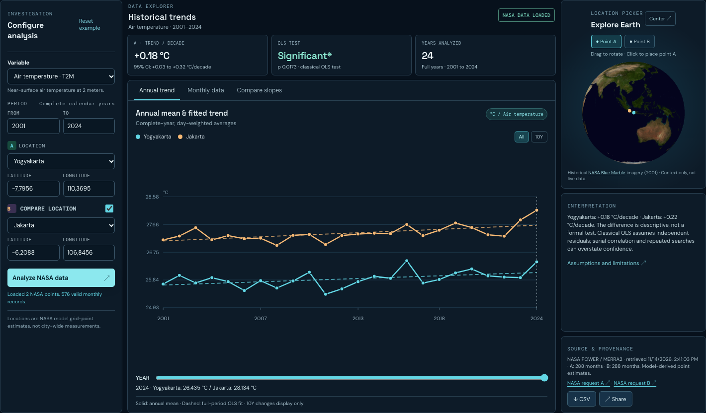

Earth is changing.
Show the evidence.
Explore NASA model-derived observations, compare places, and question whether a historical trend stands up to a statistical test.
EARTH SYSTEM TREND DETECTIVEINTERACTIVE RESEARCH TOOLWhere? How much?
How confident?
Environmental signals depend on the variable, coordinate, and time window. A visually rising line does not, on its own, prove a statistically reliable trend.
Real NASA data. Auditable steps.
NASA POWER monthly point API → valid months only → day-weighted complete-year means → ordinary least squares → t-based interval and p-value.
Two sampled points. Different trends.
Real NASA results, on screen.
Choose a variable, years and two geographic points. The app retrieves live NASA data, renders monthly and annual evidence, and exposes source URLs and CSV export.
This is a genuine Chromium capture from the application running against NASA POWER, not a synthetic fixture or an AI-generated interface image.

A significant p-value
is not the whole story.
- NASA POWER values are reanalysis grid-point estimates, not thermometer measurements of entire cities.
- Classical OLS confidence intervals assume independent residuals; serial correlation or repeated searches can overstate confidence.
- The two slopes are descriptive, not a formal test of their difference.
- No cause is attributed and no future conditions are predicted.
Follow the evidence.
Extend the questions.
The MVP makes NASA's Earth data explorable, exportable, and open to scrutiny. Next: mission-specific datasets, true spatial maps, seasonal anomalies, and autocorrelation-aware inference.